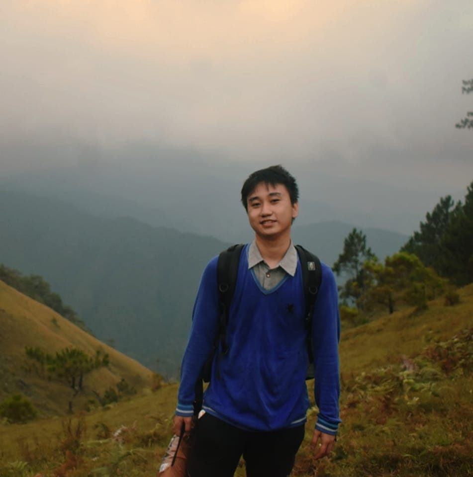
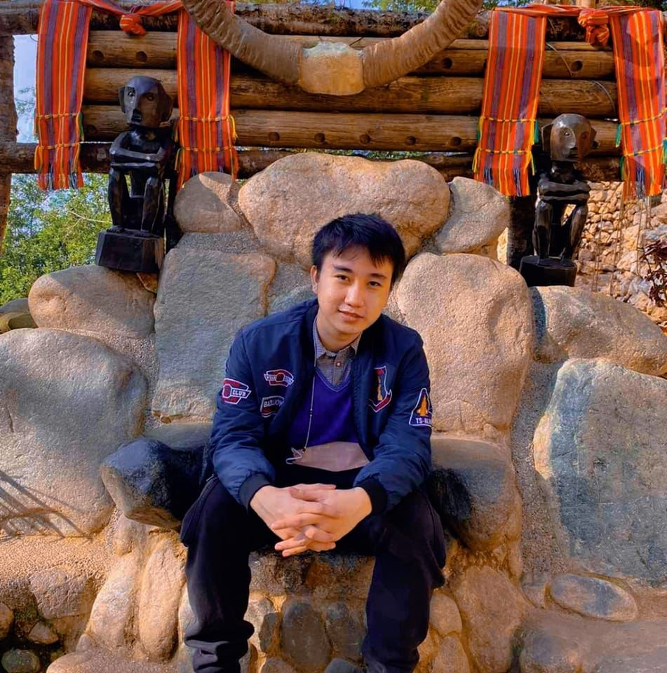

Hello there! I'm Sunday Marc Joseph M. Padua, a 23-year-old resident of the vibrant city of Muntinlupa, Philippines. Welcome to my personal corner of the internet. Here, you'll get to know me a little better.  My Journey I embarked on my educational journey with a passion for technology, leading me to pursue a diploma in Computer Engineering Technology at the renowned Polytechnic University of the Philippines. In 2021, I proudly graduated, equipped with knowledge and skills that have fueled my ever-growing curiosity about the world of technology. Weaknesses and Strengths While I'm no stranger to the world of programming and technology, like many, I have my weaknesses. Procrastination is an area where I constantly strive to improve. It's a challenge we all face at times, but I believe that acknowledging it is the first step toward overcoming it. My Passions When I'm not battling procrastination, you'll often find me indulging in my hobbies. I'm an ardent fan of studying programming, constantly exploring new languages and techniques to enhance my skills. Additionally, I'm a self-proclaimed mobile gaming enthusiast, always ready to embark on virtual adventures and challenges.  Hidden Talent Beyond the digital world, I have a hidden talent – playing the guitar. Strumming the strings and creating melodies is my way of unwinding and expressing myself creatively. It's a skill I hold dear and continue to develop. Mind Sports Enthusiast While I appreciate the thrill of the digital realm, I'm also a fan of classic mind sports, particularly chess. There's something captivating about the intellectual battles waged on a chessboard that never ceases to amaze me. It's a sport that challenges my strategic thinking and sharpens my mind. So, that's a glimpse into who I am and what makes me tick. Thanks for visiting my personal website, and feel free to explore the various facets of my digital world. If you share any of my interests or just want to chat about technology, gaming, music, or anything else, don't hesitate to reach out. Let's connect and share our experiences on this exciting journey called life.